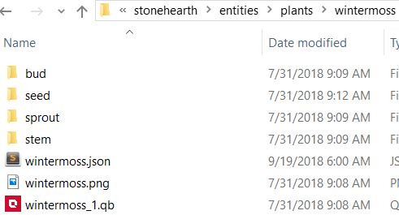
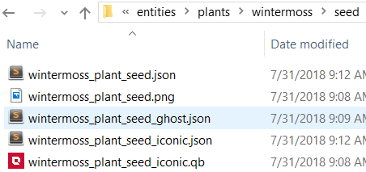

By renewable resources we mean any item like the berry bushes or the sheep, which once harvested, will regrow after some time and we'll be able to harvest it again.
Creating a renewable resource
This is how we made the bioluminescent mushroom ("Nightdew") from the "Silent Woods" tutorial mod:
We copied an existing renewable resource (the berry bush) to our mod.
We renamed the folders and files.
We edited the QB models and reexported them.
We edited the JSON files and added the localization strings to our locale file. These are the fields that we need to fill for the renewable_resource_node component in nightdew.json:
... "stonehearth:renewable_resource_node": { "resource": "silent_woods:resources:biolumin_essence:essence", "category": "harvest", "renewal_time": "22h+2h", "unripe_description": "i18n(silent_woods:entities.plants.nightdew.unripe_description)", "harvest_overlay_effect": "stonehearth:effects:harvest_plant_overlay_effect", "resource_loot_table": { "entries": { "optional": { "num_rolls": { "min": 1, "max": 1 }, "items": { "none": { "uri": "", "weight": 4 }, "seed": { "uri": "silentwood:plants:nightdew:seed", "weight": 1 } } } } } }, ..."resource" : the full alias of the item that we want to spawn when we harvest this entity. It can be an item from your mod, or from another mod.
"category" : most of the time it will be "harvest", but you may want a different value for it. For example, for shearing sheep, the category is "herding". This makes it so that only the shepherd can harvest it (because only the shepherd has the herding task group for their AI, which allows to harvest renewable resources that have the "herding" category).
"renewal_time" : how much time it takes for the resource to renew itself. Examples of time expressions: "1d" (one day), "36h" (36 hours), "6m" (6 minutes), "22h+2h" (22 hours plus some random amount of time between 0 and 2 hours).
"unripe_description" : localized description that will appear in the unit frame after the entity has been harvested and until the resource is renewed.
"harvest_overlay_effect" : the full alias of the effect that plays while the entity is marked for harvesting. In this case we're reusing the harvest plant overlay effect from the stonehearth mod, which shows a little plant icon above the entity.
"resource_loot_table" : this field is optional. We can use it to spawn other extra resources with a chance every time we spawn the main resource. Its value is a loot table.
Also, we made sure to include a model variant called "depleted" in this file (the default model is declared in the JSON file for the ghost instead). Once the entity is harvested, its model will be automatically swapped to the depleted variant:
"model_variants": { "depleted": { "models": [ "file(nightdew_empty.qb)" ] } } If we add a "durability" field to the renewable_resource_node component, we'll be able to harvest the entity N times, after which it will get destroyed. If we don't include it we'll be able to keep harvesting it indefinitely every time it regrows.
If we add a "durability" field to the renewable_resource_node component, we'll be able to harvest the entity N times, after which it will get destroyed. If we don't include it we'll be able to keep harvesting it indefinitely every time it regrows.We added an alias for our mushroom in our mod's manifest:
"plants:nightdew": "file(entities/plants/nightdew/nightdew.json)"We created the resource that it drops, by copying and editing an existing resource from
stonehearth/entities/resources, and added the alias to our manifest:"resources:biolumin_essence:essence": "file(entities/resources/biolumin_essence/essence)"Finally, we added the plant to the biome (as seen here. How to create your own biome is explained here) and included some material maps so that the mushroom glows. Make sure to test that it can be correctly harvested and that it renews its resource.

Creating non-renewable resources
We can also create items that do not renew their resource, and disappear once harvested (such as the trees, boulders, and some of the existing plants). To do that we'd use the resource_node component in our entity's JSON file, instead of the renewable_resource_node component.
Normally the non-renewable resources have a "durability" field, which is the times that it will be harvested before disappearing. Example from small_oak_tree.json:
"stonehearth:resource_node": {
"resource": "stonehearth:resources:wood:oak_log",
"durability": 6
}
Trees reuse the tree.json mixin, which has these other fields for the resource_node component:
"stonehearth:resource_node": {
"harvest_overlay_effect": "stonehearth:effects:chop_overlay_effect",
"harvester_effect": "chop",
"description": "chop_tree"
}
It includes a "harvest_overlay_effect" (same than for renewable resources), and a "harvester_effect" field, so that hearthlings play the chop animation when harvesting them. The "description" field is there for legacy reasons, so don't change its value.
We can also use the resource_loot_table for implementing the number of drops, instead of the durability. This is an example from wintermoss.json:
...
"stonehearth:resource_node": {
"resource": "stonehearth:resources:fiber:wintermoss_bundle",
"category": "harvest",
"harvest_overlay_effect": "stonehearth:effects:harvest_plant_overlay_effect",
"resource_spawn_effect": "stonehearth:effects:harvest_plants_effect",
"description": "harvest_plant",
"resource_loot_table": {
"entries": {
"mandatory": {
"num_rolls": {
"min": 1,
"max": 2
},
"items": {
"none": {
"uri": "stonehearth:resources:fiber:wintermoss_bundle",
"weight": 1
}
}
},
"optional": {
"num_rolls": {
"min": 1,
"max": 1
},
"items": {
"none": {
"uri": "",
"weight": 3
},
"pelt": {
"uri": "stonehearth:plants:wintermoss:seed",
"weight": 2
}
}
}
}
}
},
...
The resource loot table will drop 1 or 2 wintermoss bundles, and sometimes 1 seed, if we're lucky. After that, the wintermoss will disappear even though we only harvested it once.
Creating seeds for plants
How to create seeds for crops is explained here. Seeds for wild plants will have grow stages, similar to those of the crops. In the game, you can move seeds you just planted, but if they're seeds for trees or certain other plants, you won't be able to move them anymore once they grow for the first time. Of course, you can change this behavior in the components of your modded entities.
Let's see how to create seeds. It involves many files depending on how many growing stages we want between the seed and the full grown plant, but they're just JSON and QB models, the process is exactly the same than with any other entity.
We'll use the wintermoss from the stonehearth mod as an example:
First we find an existing plant from which we want to copy the seeds. In this case, notice that we'll have 4 growing stages plus the ripe wintermoss: 
First let's modify the files inside the "seed" folder:  We rename them to reference our plant's name, leaving the suffix of the name untouched so we know what does each file reference.
wintermoss_plant_seed_iconic.json :
{ "mixins": "stonehearth:mixins:item_properties", "type": "entity", "components": { "model_variants": { "default": { "models": [ "file(wintermoss_plant_seed_iconic.qb)" ] } }, "mob": { "model_origin": { "x": 0.05, "y": 0, "z": 0.05 } } }, "entity_data": { "stonehearth:catalog": { "is_item": true, "category": "seed", "material_tags": "stockpile_plant plant resource seed seed_hard" }, "stonehearth:food_decay": { "initial_decay": { "min": 168, "max": 168 } } } }Here we reference the model for the iconic of the seeds, the material tags for storage filters, and a category for other uses. We also add "stonehearth:food_decay" data in the "entity_data" so that seeds that are not planted in a week are automatically destroyed (this is controlled by the food_decay service - the decay is calculated as a range between the "min" and "max" values, which are numbers that represent in-game hours, in this case 24h * 7d = 168).
wintermoss_plant_seed_ghost.json :
{ "mixins": "stonehearth:mixins:placed_object", "type": "entity", "components": { "render_info": { "scale": 0.15 }, "model_variants": { "default": { "models": [ { "type": "one_of", "items": [ "file(../wintermoss_1.qb)" ] } ] } }, "mob": { "model_origin": { "x": -0.075, "y": 0, "z": 0.075 }, "region_origin": { "x": 0.5, "y": 0, "z": 0.5 } } }, "entity_data": { "stonehearth:catalog": { "display_name": "i18n(stonehearth:entities.plants.wintermoss.seed.wintermoss_plant_seed_ghost.display_name)", "description": "i18n(stonehearth:entities.plants.wintermoss.seed.wintermoss_plant_seed_ghost.description)", "icon": "file(wintermoss_plant_seed.png)", "category": "seed" } } }Here we adjust the model for the ghost (we use the model of the full grown plant, so that we know how much space it will take when it finishes growing), the scale and model / region origins if needed, and the data for the catalog.
wintermoss_plant_seed.json :
{ "type": "entity", "mixins": "stonehearth:mixins:placed_object", "components": { "render_info": { "scale": 0.1 }, "stonehearth:evolve": {}, "stonehearth:entity_forms": { "iconic_form": "file(wintermoss_plant_seed_iconic.json)", "ghost_form": "file(wintermoss_plant_seed_ghost.json)", "placeable_on_ground": true, "hide_undeploy_ui": true }, "model_variants": { "default": { "models": [ { "type": "one_of", "items": [ "file(../../dirt_pile/dirt_pile_1.qb)", "file(../../dirt_pile/dirt_pile_2.qb)", "file(../../dirt_pile/dirt_pile_3.qb)" ] } ] } }, "mob": { "model_origin": { "x": -0.075, "y": 0, "z": 0.075 }, "region_origin": { "x": 0.5, "y": 0, "z": 0.5 }, "mob_collision_type": "clutter" } }, "entity_data": { "stonehearth:evolve_data": { "next_stage": "stonehearth:plants:wintermoss:sprout", "evolve_time": "2h+2h" }, "stonehearth:net_worth": { "value_in_gold": 2, "rarity": "common", "shop_info": { "buyable": true, "sellable": true, "shopkeeper_type": "caravan", "shopkeeper_level": 1 } }, "stonehearth:catalog": { "display_name": "i18n(stonehearth:entities.plants.wintermoss.seed.wintermoss_plant_seed.display_name)", "description": "i18n(stonehearth:entities.plants.wintermoss.seed.wintermoss_plant_seed.description)", "icon": "file(wintermoss_plant_seed.png)", "category": "seed", "material_tags": "stockpile_plant plant resource seed seed_hard" } } }This is the root form for the seeds. Most of these fields should be already familiar. Let's explain the new ones:
"stonehearth:evolve": {}" -- this component is in charge of growing the seeds into a plant, as well as growing a plant stage into the next stage. It has no properties, they're defined in the "stonehearth:evolve_data" section of the "entity_data" instead, because they're reusable for all the seeds of this type of plant.
The properties for the evolve data are: "next_stage", which points to the full alias of the next growth stage, in this case "stonehearth:plants:wintermoss:sprout", and "evolve_time", which is a time expression for how much time it takes for the seed to grow to the next stage once planted. Remember to add the aliases to your manifest if you haven't already.
"stonehearth:entity_forms" : { ... } -- as a reminder, here we added two optional fields: "placeable_on_ground", which allows this item to be placed on the ground, and "hide_undeploy_ui", which will hide the undeploy button from the unit frame once the entity is placed down.
"mob" : { ... } -- the "mob_collision_type" : "clutter" means that this entity can overlap with other entities and hearthlings can walk through it.
Once we finished with the seed files, we can do the same for the next growth/evolve stage, in this case, "sprout".
As you can see, for the stages between seeds and full grown plant we only need one file, because the plant won't be undeployable while it's growing, so we don't need iconic / ghost files for it. So let's just change the fields we need to point to our files:
{ "type": "entity", "mixins": "stonehearth:mixins:placed_object", "components": { "stonehearth:evolve": {}, "model_variants": { "default": { "models": [ "file(wintermoss_sprout.qb)" ] } }, "mob": { "model_origin": { "x": 0, "y": 0, "z": 0 }, "region_origin": { "x": 0.5, "y": 0, "z": 0.5 }, "mob_collision_type": "clutter" } }, "entity_data": { "stonehearth:evolve_data": { "next_stage": "stonehearth:plants:wintermoss:stem", "evolve_time": "7h+2h" }, "stonehearth:catalog": { "material_tags": "stockpile_plant", "display_name": "i18n(stonehearth:entities.plants.wintermoss.sprout.wintermoss_plant_sprout.display_name)", "description": "i18n(stonehearth:entities.plants.wintermoss.sprout.wintermoss_plant_sprout.description)", "category": "plants" }, "stonehearth:appeal": { "appeal": 1 } } }They are similar to those for the seed root form. We declare the alias for the next stage (remember to add it to your manifest).
Repeat for the next stages, in this case "stem" and "bud".
Bud will then point to the full alias of the grown wintermoss plant (wintermoss.json), completing the growth cycle:
... "stonehearth:evolve_data": { "next_stage": "stonehearth:plants:wintermoss", "evolve_time": "7h+2h" }, ...
Final notes
The evolve component and the decay service can be used for anything that needs to change after some time, for example poyos and sheep use the evolve component to grow after they're born:
...
"stonehearth:evolve_data": {
"current_stage": "young",
"next_stage": "stonehearth:sheep",
"evolve_time": "24h",
"evolve_effect": "stonehearth:effects:fursplosion_effect"
},
...
In this case we also specify a "current_stage" and an "evolve_effect", which are used in other Lua files.
The growing component is mostly used for crops instead.